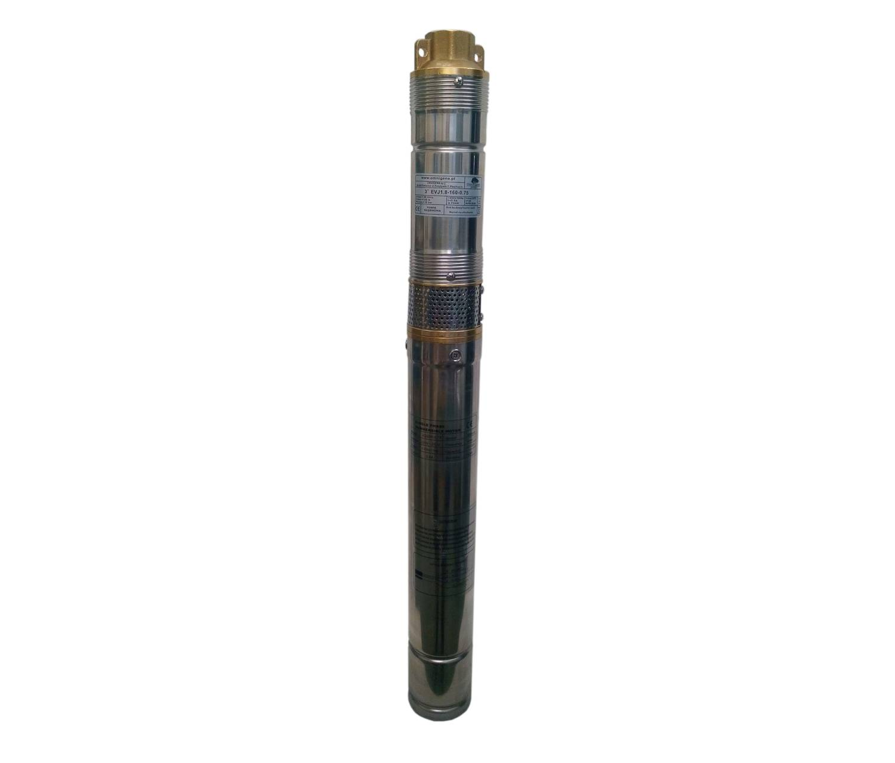
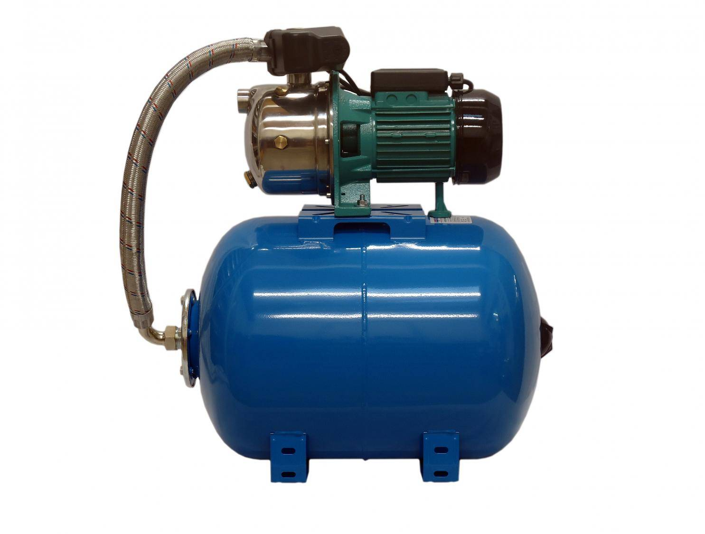
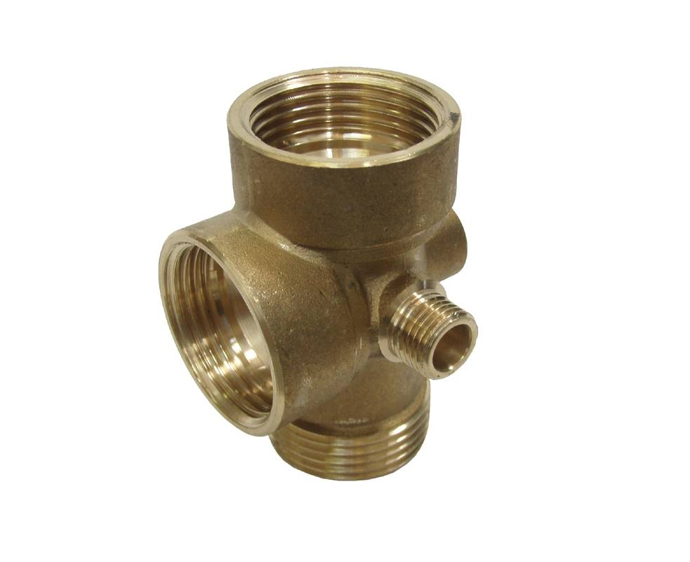

Instalatérství
a opravy čerpadel
Prodej, odborný výběr, instalace, servis a opravy čerpadel a domácích vodáren. Instalatérské práce a zkušenosti v oboru od roku 1996.
Naše služby
Od výběru vhodného čerpadla přes instalaci až po následný servis a opravy.
Prodej a výběr čerpadel
Nevíte, jaké čerpadlo je pro vás vhodné? Pomůžeme s výběrem podle způsobu použití a konkrétních podmínek.
- konzultace před nákupem
- pomoc s výběrem vhodného typu čerpadla
- čerpací technika a příslušenství
- možnost navazující odborné instalace
Domácí vodárny
Pomoc s výběrem, instalací, servisem a opravami domácích vodáren.
- výběr vhodné domácí vodárny
- instalace a zapojení
- diagnostika problémů
- servis a opravy
Opravy čerpadel a vodáren
Při poruše nejprve zjistíme příčinu problému a následně navrhneme vhodný postup opravy.
- diagnostika závad
- opravy čerpadel
- opravy domácích vodáren
- výměna potřebných dílů podle závady
Servis čerpací techniky
Odborný servis čerpadel, domácích vodáren a souvisejících zařízení.
- kontrola zařízení
- servis čerpadel a vodáren
- řešení provozních problémů
- doporučení dalšího postupu
Instalace a zapojení
Po výběru vhodného zařízení je možné domluvit také jeho odbornou instalaci.
- montáž čerpadel
- instalace domácích vodáren
- zapojení potřebného příslušenství
- kontrola funkčnosti po instalaci
Instalatérské práce
Instalatérské práce související s vodou, čerpací technikou a domácími vodárnami.
- instalatérské práce související s instalací
- úpravy souvisejících částí
- řešení podle konkrétní situace zákazníka
Pohotovostní služby i o víkendech
Porucha čerpadla nebo domácí vodárny nemusí přijít jen během pracovního týdne. Po telefonické domluvě poskytujeme pohotovostní služby také o víkendech.
- telefonická domluva dalšího postupu
- řešení naléhavých poruch
- Hlinsko a široké okolí
Nevíte, jaké čerpadlo vybrat?
Nemusíte znát přesný typ ani všechny technické parametry. Zavolejte a společně probereme, k čemu čerpadlo potřebujete. Podle konkrétní situace lze vybrat vhodné řešení a následně domluvit také instalaci.
Zavoláte
Popíšete, k čemu čerpadlo potřebujete nebo jaký problém právě řešíte.
Vybereme řešení
Podle konkrétních podmínek se domluví vhodný typ čerpadla nebo vodárny.
Zajistíme techniku
Čerpací techniku, náhradní díly a příslušenství lze zajistit z nabídky KOPRO.
Domluvíme instalaci
V případě potřeby lze domluvit odbornou montáž, zapojení a kontrolu funkčnosti zařízení.
Čerpadla a příslušenství KOPRO
Čerpací technika, příslušenství a náhradní díly s možností konzultace výběru a následné instalace.
Pokud si nejste jistí výběrem, není nutné vybírat čerpadlo bez předchozí konzultace. Zavolejte a domluvíme, jaké řešení je pro vaše použití vhodné.

Ponorná čerpadla
Čerpací technika pro studny, vrty a další vhodná použití.

Domácí vodárny
Řešení pro zásobování domácností vodou podle konkrétních podmínek.

Příslušenství a další technika
Příslušenství, náhradní díly a další čerpací technika podle potřeby.
Konkrétní výběr čerpadla je možné předem konzultovat telefonicky.
Pohotovostní servis i o víkendech
Máte poruchu čerpadla nebo domácí vodárny? Zavolejte a popište problém. Podle konkrétní situace domluvíme další postup a možnost servisního výjezdu v Hlinsku a širokém okolí.
Pohotovostní servis
☎ 724 356 751Zkušenosti od roku 1996
Ladislav Vácha se oboru čerpadel, domácích vodáren a instalatérských prací věnuje od roku 1996.
Zajišťuje prodej, pomoc s výběrem, instalaci, servis i opravy čerpací techniky pro zákazníky v Hlinsku a širokém okolí.
Zákazník tak může řešit vše od výběru vhodného zařízení přes jeho instalaci až po následný servis a případnou opravu.
Zkušenosti v oboru od roku 1996
Osobní přístup a odborný servis.
Hlinsko a široké okolí
Servis, opravy a instalace čerpadel a domácích vodáren poskytujeme zákazníkům v Hlinsku a širokém okolí. Pro informace o možnosti výjezdu do vaší obce nás kontaktujte telefonicky.
Potřebujete poradit, servis nebo opravu?
Zavolejte nebo napište. Domluvíme další postup.
Telefon
☎ 724 356 751